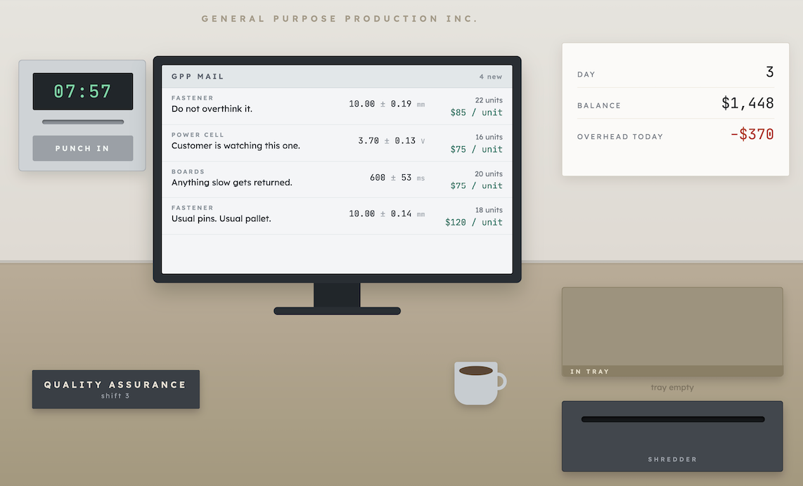

The MakerBot Replicator
A look into the machine that brought FDM printing home
Read spotlight →Guiding questionWhy are different manufacturing techniques used for producing different products?
A design that cannot be made is not a design, it is a drawing. This topic exists to close the gap between those two things, and it is where a lot of ambitious ideas quietly get better. Once you know that a part has to release from a mould, or that an internal corner has a radius because the cutting tool is round, you start drawing differently. The constraint is not the enemy of the idea. It is usually what gives the idea a shape.
Learn the five categories properly rather than approximately, because Paper 2 rarely asks you to name a process. It asks you to choose one and defend the choice against volume, material, geometry, cost and finish, all at once, which is also exactly the reasoning your IA needs. The newer material here, particularly 4D and 5D printing, is genuinely unsettled. These are technologies still arguing with themselves about what they are for, which makes them unusually interesting to write about if you read beyond these notes.
Students must be able toOutline additive, subtractive (wasting), forming, joining and finishing techniques, relevant to the properties of the selected material(s).
All manufactured products result from applying one or more techniques drawn from five broad categories. The choice of category depends on material properties, desired geometry, production volume and cost.
| Category | Principle | Typical materials | Examples |
|---|---|---|---|
| Additive | Build up material layer by layer | Polymers, metals, ceramics, composites | SLA, FDM, SLS, material jetting |
| Subtractive | Remove material from a solid block | Metals, polymers, wood, composites | Turning, milling, laser cutting, waterjet |
| Forming | Reshape without adding or removing material | Metals, thermoplastics | Casting, injection moulding, rolling, forging |
| Joining | Fasten two or more parts permanently or temporarily | Any combination | Welding, soldering, adhesives, fasteners |
| Finishing | Protect or enhance the surface | Metals, polymers, wood | Anodising, powder coating, polishing |
The categories are not mutually exclusive; a single product typically requires techniques from several categories applied in sequence.
Additive manufacturing can build almost any geometry with no tooling cost, so in theory it should be replacing subtractive, forming and joining across the board. In practice, most mass-market products still aren't printed. A subtractively-machined aluminium part is stronger and cheaper than a printed one at high volume; an injection-moulded polymer part can be produced in seconds once the mould exists, where a printed equivalent takes hours.
For a product you use daily, work out which of the five categories actually made it, and why. What would have to change, materially, economically or technologically, before additive manufacturing became the default rather than the exception for that product?
Students must be able toExplain how components are produced using additive manufacturing techniques, including fused deposition modelling (FDM) and stereolithography (SLA).
Additive manufacturing (AM) constructs objects by depositing or curing material one cross-sectional layer at a time. Chuck Hull invented stereolithography in 1984, marking the birth of commercial 3D printing.
| Process | Material feedstock | Energy/mechanism | Strengths | Limitations |
|---|---|---|---|---|
| Stereolithography (SLA) | Liquid photopolymer resin | UV laser cures each layer | Very high accuracy; smooth surface finish | Brittle parts; post-cure required; resin cost |
| Fused Deposition Modelling (FDM) | Thermoplastic filament (PLA, ABS, PETG…) | Heated nozzle melts and deposits | Low cost; wide material choice; large build volumes | Visible layer lines; anisotropic strength |
| Selective Laser Sintering (SLS) | Polymer or metal powder | Laser sinters powder bed | No support structures needed; strong parts | Powder handling; surface porosity |
| Material Jetting | Photopolymer droplets | UV curing of inkjet-deposited drops | Multi-material; full colour; very high detail | High cost; brittle support material |
| Binder Jetting | Powder + liquid binder | Binder printed onto powder bed | High speed; large metal parts possible | Lower density; sintering step required |
| Directed Energy Deposition (DED) | Metal wire or powder | Laser or electron beam melts feedstock in flight | Repairs and additions to existing parts | Rough surface; expensive equipment |
A material is isotropic if its mechanical properties, such as strength and stiffness, are the same in every direction. It is anisotropic if those properties vary depending on the direction in which a load is applied. FDM parts are anisotropic because each layer bonds well within itself but only partially fuses to the layer above it, so the part is weaker when pulled apart along the layer lines (the Z-axis) than when loaded in the X-Y plane.
This connects to the discussion of material properties in A3.1 Material Classification: most bulk metals and polymers are treated as isotropic, but processes that build a part from oriented layers, fibres or grains (3D printing, composite lay-up, wood grain, rolled sheet metal) introduce direction-dependent behaviour that a designer must account for when orienting a part for printing or loading.
A look into the machine that brought FDM printing home
Read spotlight →Students must be able toDistinguish between rapid prototyping techniques used for creating initial base models (which serve as a foundation for testing and validation) as opposed to techniques used in the production of refined products.
Rapid prototyping (RP) is the fast production of a physical model directly from CAD data, used primarily for form, fit and function testing early in the design process.
Workflow: CAD model → export as STL/3MF → slice into layers → print → post-process → evaluate
| Characteristic | Rapid prototype | Production part |
|---|---|---|
| Purpose | Test geometry, ergonomics, assembly | End-use function |
| Material | Cheap polymer (PLA, resin) | Specified engineering material |
| Volume | 1–5 units | 100s–millions |
| Finish | Often rough / support marks | Meeting spec tolerances |
| Lead time | Hours to days | Days to weeks per mould/setup |
| Cost per part | Higher (no tooling amortisation) | Lower at scale |
As AM materials and accuracy improve, the boundary between prototype and production part blurs. GE Aviation now produces certified LEAP engine fuel nozzles using SLS.
Students must be able toDescribe additive manufacturing techniques used in manufacturing, including powder bed fusion (PBF), material extrusion, and selective laser sintering (SLS).
AM is particularly suited to low-volume, high-complexity, or patient-specific production where conventional tooling would be prohibitively expensive. The crossover point where injection moulding becomes cheaper than AM is typically around 1,000–10,000 units depending on part complexity.
| Industry | Application | AM process | Benefit |
|---|---|---|---|
| Medical/Dental | Invisalign aligners; patient-specific implants | SLA, SLS, material jetting | Mass customisation; no tooling per patient |
| Aerospace | GE LEAP fuel nozzles; Airbus bracket | SLS (Ti-6Al-4V) | Weight reduction; consolidated parts |
| Automotive | F1 brake ducts; Bugatti titanium caliper | SLS metal | Complex topology-optimised geometry |
| Consumer goods | Adidas 4D midsole; New Balance FuelCell | DLP/SLA lattice | Tunable cushioning; on-demand production |
| Construction | ICON concrete 3D-printed homes (Texas) | Concrete extrusion (DED variant) | Reduced labour; complex geometry possible |
Students must be able toExplain how the use of shape memory polymers can be deployed for printing 4D objects and provide examples of their potential use.
4D printing (coined by MIT's Skylar Tibbits, 2013) is 3D printing with smart materials: the fourth dimension is time, representing the transformation that occurs after printing.
Key smart materials:
Four-stage SMP cycle:
| Application area | Example | Stimulus |
|---|---|---|
| Biomedical | Self-deploying stents; drug delivery capsules | Body heat |
| Aerospace | Morphing aerofoils; deployable solar panels | Temperature |
| Soft robotics | Gripper fingers that curl around objects | Temperature / humidity |
| Smart textiles | Self-adjusting sportswear ventilation | Moisture / heat |
Students must be able toExplain how 5D technology can be used to produce long-lasting and complex components in biomedical, automobile and aerospace applications.
Standard 3D printing moves in three axes (X, Y, Z). 5D additive manufacturing adds two rotational axes (one on the extruder head and one on the print bed), allowing the nozzle to deposit material on curved surfaces from multiple angles.
Key advantages over 3D printing:
| Industry | Application | 5D benefit |
|---|---|---|
| Biomedical | Skull implants; bone scaffolds | Curved surfaces match anatomy; no support contamination |
| Automotive | Structural brackets; B-pillar inserts | Fibre orientation matches load paths; weight saving |
| Aerospace | Turbine blade coatings; fuselage ribs | Complex curvature; high-strength composite deposition |
Students must be able toExplain how components are produced using wasting manufacturing techniques, including machining (cutting, milling, turning) and abrading processes, which are applied to both 3D and 2D materials.
Subtractive (wasting) processes begin with a solid block or sheet and remove material to reveal the final shape. CNC (computer numerical control) automation allows extremely precise, repeatable cuts.
| Process | Mechanism | Materials | Typical application |
|---|---|---|---|
| Turning (lathe) | Workpiece rotates; cutting tool traverses | Metals, polymers, wood | Shafts, cylinders, threads |
| Milling | Rotating cutter moves across stationary workpiece | Metals, polymers, composites | Flat surfaces, slots, pockets, complex 3D profiles (5-axis) |
| EDM / Wire cutting | Electrical discharge erodes metal | Conductive metals | Hardened tool steel dies; very fine features |
| Laser cutting | Focused laser melts/vaporises material | Sheet metal, polymers, wood, fabrics | 2D profiles; thin materials |
| Plasma cutting | Ionised gas jet melts and blows away metal | Conductive metals (up to 150 mm) | Structural steel; shipbuilding |
| Abrasive waterjet | Water at 280–690 MPa + abrasive grit | Any material including stone, glass, titanium | Heat-sensitive or hard materials |
Subtractive processes produce excellent surface finishes and tight tolerances (±0.01 mm or better for CNC milling), but can generate significant material waste (swarf/chips).
CNC describes any manufacturing machine, a lathe, mill, router, laser or plasma cutter, that is guided by a computer program rather than a human operator moving the tool by hand. The designer's CAD model is converted into G-code, a list of coordinate and tool instructions, which drives motors to move the cutting tool along the programmed path with repeatable accuracy measured in microns.
This builds on the prototyping workflow introduced in A2.2 Prototyping Techniques: where a 3D printer deposits material to build a part, a CNC machine removes it, and both rely on the same digital file, the CAD model, to translate a design directly into a physical object without dedicated tooling for each one-off part.

Measure products, test batteries, and pretend to have fun in this thrilling and somewhat stressful game.
Students must be able toExplain how components are produced using forming techniques, including bending, press-forming, casting, moulding (injection, extrusion, rotational, blow, vacuum) processes.
Forming exploits a material's plasticity, fluidity (molten) or elasticity. Since material is not wasted, forming is generally more material-efficient than subtractive methods.
Metal casting:
| Process | Mould type | Notes |
|---|---|---|
| Sand casting | Expendable sand mould | Low tooling cost; rough surface; any alloy |
| Investment (lost-wax) casting | Expendable ceramic shell | Excellent detail and surface; complex 3D shapes; expensive |
| Die casting | Permanent steel die | High volume; thin walls; aluminium/zinc alloys |
| Continuous casting | Water-cooled copper mould | Junghans process (1933); molten steel solidifies as a strand; standard for steel/aluminium production |
Polymer moulding:
| Process | Principle | Typical products |
|---|---|---|
| Injection moulding | Molten polymer injected into closed mould under pressure | Phone cases, bottle caps, dashboard parts |
| Blow moulding | Hollow parison inflated inside mould | PET bottles, fuel tanks |
| Thermoforming | Sheet heated then vacuum- or pressure-formed over tool | Food packaging, bathtubs, aircraft cabin panels |
| Extrusion | Polymer forced through a die; continuous profile | Pipe, window frames, cable insulation |
| Rotational moulding | Powder loaded into mould; mould heated and biaxially rotated | Large hollow items: tanks, kayaks, playground equipment |
Students must be able toExplain how components are assembled using joining techniques, including adhering, fastening, stitching, weaving and welding processes.
Joining creates assemblies from separate components. The choice between permanent and temporary joining has significant implications for repairability, recycling and end-of-life disassembly.
| Technique | Type | Mechanism | Example / notes |
|---|---|---|---|
| Fusion welding | Permanent | Base metal melted; may use filler rod (MIG, TIG, arc) | Steel structures, pipelines |
| Solid-state welding | Permanent | No melting: friction stir, ultrasonic, explosive | Dissimilar metals; aircraft fuselage panels |
| Soldering | Permanent | Filler alloy melted below 450 °C; wets parent metals | PCB assembly (SAC305 lead-free solder per RoHS) |
| Brazing | Permanent | Filler alloy melted above 450 °C; base metals not melted | Copper pipe joints; tool tips |
| Adhesives | Permanent | Chemical bonding at surface (epoxy, cyanoacrylate, structural acrylic) | Aerospace composite bonds; automotive body panels |
| SMT (Surface Mount Technology) | Permanent | Solder paste + reflow oven attaches SMD components to PCB | All modern PCBs; very high component density |
| Mechanical fasteners | Temporary | Bolts, screws, rivets, snap-fits, press-fits | Wide use; allows disassembly |
| Stitching / weaving | Permanent / temporary | Thread or fibre interlocks | Textiles; fibre-reinforced composites (woven prepreg) |
One cam, one dowel, and the flat-pack industry it built.
Read case study →Students must be able toSuggest how natural and human-made finishing techniques (anodising, electroplating, galvanising), coatings (powder coating), polishing, and sealants enhance a product's aesthetics, protection, durability, longevity and ease of maintenance.
Finishing techniques are applied after forming or machining to alter the surface chemistry, texture or appearance of a component. They can dramatically extend product life and perceived quality.
| Technique | Process | Material | Benefit | Examples |
|---|---|---|---|---|
| Anodising | Electrochemical: aluminium becomes anode in sulphuric acid bath; oxide layer grows into surface | Aluminium alloys | Corrosion resistance; hard surface; accepts dyes | iPhone enclosures; bicycle frames; architectural cladding |
| Electroplating | DC current deposits metal ions (chrome, nickel, gold, silver) from solution onto workpiece (cathode) | Any conductive substrate | Decorative; corrosion / wear resistance; conductivity | Chrome taps; gold-plated connectors; nickel-plated steel |
| Hot-dip galvanising | Steel immersed in molten zinc (450 °C); zinc-iron alloy layers bond; surface shows characteristic spangle | Steel | Sacrificial cathodic protection; very thick coating | Street furniture, motorway barriers, structural steelwork |
| Powder coating | Dry polymer powder electrostatically applied then cured at 177–204 °C in oven | Metals | Thick, even coat; no VOC solvents; wide colour range | Garden furniture, bicycle frames, kitchen appliances |
| Ceramic coating | Silicon dioxide (SiO₂) or titanium dioxide (TiO₂) nano-layer applied and cured | Metals, glass, polymers | Extreme hardness; UV and chemical resistance; hydrophobic | Automotive paintwork protection; cookware; aerospace |
| Polishing | Abrasive or chemical removal of surface peaks; electropolishing uses electrochemical dissolution | Metals, polymers, glass | Improved aesthetics; reduced friction and bacterial adhesion | Surgical instruments; optical components; jewellery |
Students must be able toSuggest why specific manufacturing techniques have been used to create a given component.
No real product uses only one category of technique. The design team must reason about why each technique is selected by connecting material properties, geometry, volume, cost and sustainability.
Case study (smartphone, iPhone-type aluminium body):
| Component | Technique(s) | Category | Rationale |
|---|---|---|---|
| Aluminium enclosure | CNC milling from billet + anodising | Subtractive + Finishing | Billet milling gives tight tolerance and complex radii; anodising provides colour, scratch resistance and eliminates paint |
| Glass back panel | Chemical strengthening (ion exchange) + polishing | Forming + Finishing | Ion exchange compresses surface for crack resistance; polishing ensures optical clarity |
| PCB | SMT reflow soldering | Joining | Enables placement of hundreds of components in mm²; no through-holes required |
| SoC (chip) | Photolithography (subtractive at nm scale) + wire bonding | Subtractive + Joining | Transistors defined by etching; die bonded to substrate |
| Battery | Winding / stacking of electrodes + laser welding | Forming + Joining | Electrode layers formed by calendering; sealed by laser welding |
| Camera lens | Glass pressing + polishing + anti-reflection coating | Forming + Finishing | Precision pressing gives lens shape; polishing and coating ensure optical performance |
Exam tip: when asked to "suggest why," link the technique to a specific material property or product requirement (e.g., "injection moulding is used for the polymer casing because the high-volume production run amortises the tooling cost").
Ten questions covering the learning objectives for this topic. Select one answer per question, then click "Check all answers" to see your score and the explanations.
[4 marks] Outline the five categories of manufacturing techniques and give one example process for each.
Mark scheme guidance: 1 mark for each category correctly named with a valid example. Any four of the five earn full marks.
[6 marks] Describe the continuous casting (Junghans) process for steel and explain two advantages it offers over conventional ingot casting.
Process description (up to 4 marks):
Two advantages (1 mark each, up to 2):
[5 marks] Explain the four-stage cycle by which a shape memory polymer (SMP) is used in 4D printing, referring to the glass transition temperature (Tg).
[4 marks] A manufacturer needs to produce hollow plastic bottles, long lengths of window frame, and large hollow water tanks. Name the most suitable polymer moulding process for each and justify your choice. Then explain why injection moulding suits none of them.
[6 marks] A manufacturer is choosing between injection moulding and FDM 3D printing to produce 50,000 identical polymer brackets. Discuss the factors that would influence this decision.
Cost: Injection moulding requires a steel mould costing $10,000–$100,000, but at 50,000 units the per-part cost falls to cents. FDM has no tooling cost but machine time per part remains constant; at 50,000 units FDM is almost certainly more expensive per part. (1+1)
Cycle time / throughput: Injection moulding cycles in seconds (15–60 s per shot, often multi-cavity); FDM takes hours per part or batch. At this volume, injection moulding is dramatically faster. (1)
Dimensional accuracy and surface finish: Injection moulding typically achieves ±0.1 mm tolerances with a smooth Class A finish. FDM produces visible layer lines and ±0.3–0.5 mm without post-processing. If the bracket has tight fitting interfaces, injection moulding is preferred. (1)
Material properties: Injection moulding supports a wider range of engineering thermoplastics and produces isotropic parts. FDM parts are anisotropic (weaker in Z-axis), which may be unacceptable for a structural bracket. (1)
Conclusion: At 50,000 identical parts, injection moulding is almost always the correct choice for cost, speed and quality. FDM would only be justified if the bracket geometry changes frequently (avoiding mould changes) or if the production run is extremely urgent and tooling lead time is the bottleneck. (1)
Linking Questions
MakerBot's Replicator, launched in 2012, was many people's first encounter with a 3D printer that wasn't behind a lab door. Founded three years earlier in a Brooklyn hackerspace, MakerBot built its early machines directly on RepRap, an open-source project aiming to build a 3D printer that could print most of its own parts. The Replicator took that hobbyist hardware and packaged it as a roughly two-thousand-dollar desktop appliance, dual extruders included, right as the wider public was starting to hear the words "3D printing" for the first time.
Under the plastic shell, the machine works exactly as described above. A heated nozzle melts thermoplastic filament and deposits it one layer at a time, following the instructs provided by the gcode file. Look closely at anything printed on one and the anisotropy is visible directly.
In 1956, an IKEA employee named Gillis Lundgren struggled to fit a wooden table into his car and had the idea that started flat-pack furniture: unscrew the legs, and the same table takes a fraction of the space. That single insight turned joining technique into a shipping strategy. If a product could be joined by the customer instead of the factory, it could travel disassembled, stacked flat in a shipping container at a density solid furniture never achieves.
The joint that makes it work at IKEA's scale is the cam lock: a barrel-shaped cam sits in one panel, a dowel or screw sits in the other, and turning the cam with nothing more than a coin or the supplied hex key pulls the two panels together and locks them tight. It's a mechanical fastener exactly as described above, chosen specifically because it needs no glue, no welding equipment and almost no skill, and because it's fully reversible: the same joint that assembles a wardrobe in an apartment can be undone just as easily when it's time to move house or take it apart for recycling.